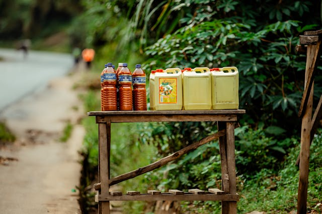

Empower every smallholder farmer
with digital tools and market access
they deserve.
A fully transparent, efficient, and fair
palm oil supply chain across Africa.
Transparency, fairness, African
identity, and technology that serves
people, not the other way around.
Smallholder Farmers sell at prices 40-60% below market rate
No digital records mean zero bargaining power
Buyers can't verify origin, quality, or sustainability
Aggregators operate blind — no real-time supply data
Processors forecast inaccurately, causing costly waste

Farmpalm connects every actor in the palm oil ecosystem. From the farm gate to the export terminal.
Logs harvest, checks live prices,
sells directly.
Coordinates pickups, manages
logistics routes, and ensures
quality grading.
Forecasts incoming supply, plans
mill capacity, and manages
compliance.
Verifies traceability, accesses
sustainability reports, and places
orders.
Predictive models analyze market
trends, seasonal patterns 4-6 weeks
ahead.
Live market benchmarks updated every
30 minutes across all regions.
Farmers digitally record every harvest-
weight, date and quality grade.
Farmers and buyers see real-time
regional price benchmarks updated
daily from verified market sources.
Every batch is tagged and
from part to port- scan to verify..
Farmpalm works on any phone. Farmers
can check prices and log harvest via
simple USSD code, with no data needed.